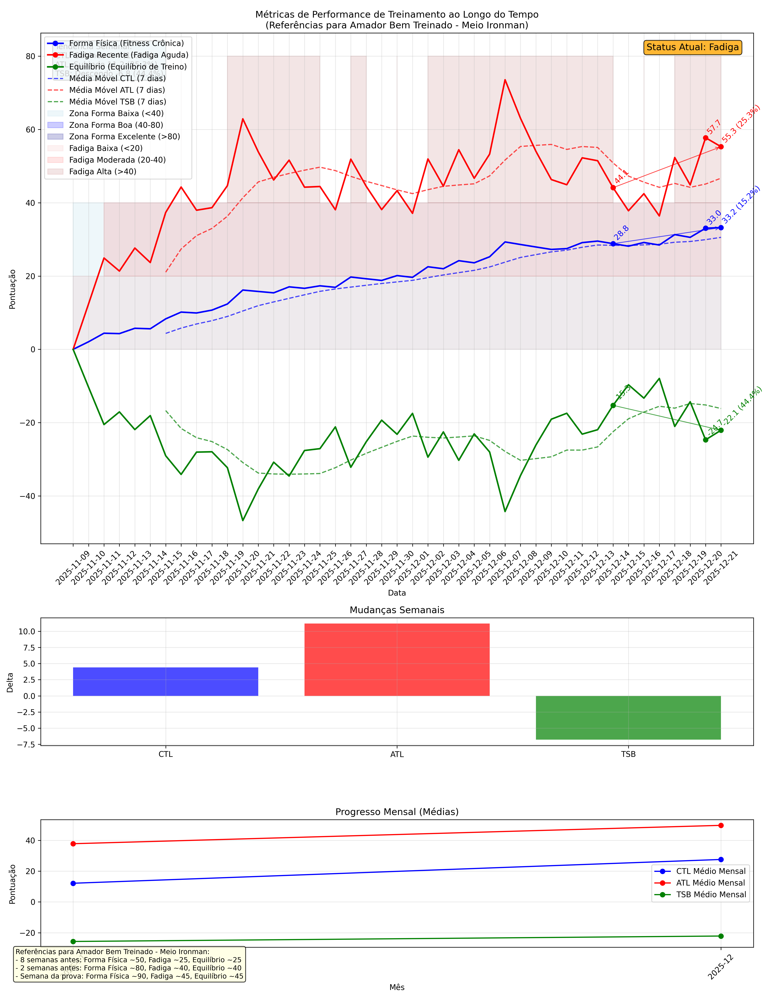

Olá! Este relatório foi gerado automaticamente com base nos seus dados de treinamento do Garmin. Como você é iniciante nessas métricas, vou explicar tudo passo a passo, de forma simples e clara. As métricas CTL (Chronic Training Load), ATL (Acute Training Load) e TSB (Training Stress Balance) ajudam a entender como seu corpo responde ao treinamento, evitando lesões e otimizando o desempenho.
33.2
Subindo 4.4 (15.2%)55.3
Subindo 11.2 (25.3%)-22.1
Descendo -6.8 (44.4%)Essas métricas vêm da teoria de treinamento de Andrew Coggan e Hunter Allen. Elas medem o estresse do treinamento e a adaptação do corpo:
Representa sua forma física geral, construída ao longo do tempo (cerca de 6 semanas). É como a "base" do seu condicionamento. Valores mais altos significam que você está mais preparado para provas longas. Para um amador bem treinado em meio Ironman, o CTL ideal é em torno de 50-90.
Mostra a fadiga recente (últimos 7 dias). É o cansaço imediato do treinamento intenso. Valores altos indicam que você precisa de descanso. Idealmente, ATL deve ser menor que CTL para evitar overtraining.
É a diferença entre CTL e ATL (TSB = CTL - ATL). Valores positivos significam recuperação (bom para treinar duro), negativos indicam fadiga (precisa descansar). É como um "saldo" de energia.
Aqui estão suas últimas atividades registradas:
| Data | Atividade | Distância | Duração |
|---|---|---|---|
| 2025-12-21 | Londrina Corrida | 4.01 km | 19.5 min |
| 2025-12-21 | Double São Luiz | 60km | 60.10 km | 143.2 min |
| 2025-12-20 | Londrina Corrida | 8.14 km | 37.4 min |
| 2025-12-20 | Natação em piscina | 1.50 km | 30.8 min |
| 2025-12-20 | ROUVY - Skeena River | Canada | 40.29 km | 70.2 min |
| 2025-12-19 | ROUVY - Dunstan Cycle Trail Pt2 ~ New Zealand | 13.38 km | 32.2 min |
| 2025-12-18 | Londrina Corrida | 10.01 km | 51.4 min |
| 2025-12-18 | Natação em piscina | 2.10 km | 73.4 min |
| 2025-12-17 | ROUVY - Workout - 2025-12-17 | 48.42 km | 75.0 min |
| 2025-12-17 | Força | N/A | 77.7 min |
Abaixo está o gráfico visual das suas métricas ao longo do tempo. As linhas mostram a evolução, as zonas coloridas ajudam a interpretar os níveis, e as setas indicam tendências semanais.
O gráfico principal tem três linhas coloridas (azul para CTL, vermelho para ATL, verde para TSB) e médias móveis (linhas pontilhadas) para suavizar variações diárias.
As áreas preenchidas representam níveis de forma e fadiga:
Essas zonas são inspiradas em apps como TrainingPeaks e ajudam a ver se você está progredindo.
As setas mostram se as métricas estão subindo, descendo ou estáveis na última semana. Por exemplo, uma seta para cima no CTL significa que sua forma está melhorando.
Nos últimos pontos (hoje, ontem e há 7 dias), há números com percentuais. O percentual mostra a mudança semanal (ex: +10% significa aumento de 10% em uma semana).
No gráfico, há um texto com tendências semanais. Aqui está um resumo:
| Métrica | Tendência | Delta (Diferença) | Percentual |
|---|---|---|---|
| CTL | Subindo | 4.4 | 15.2% |
| ATL | Subindo | 11.2 | 25.3% |
| TSB | Descendo | -6.8 | 44.4% |
Dica: Se CTL estiver subindo e ATL não muito alto, você está progredindo bem. Se ATL subir demais, reduza o treino.
Baseado no TSB atual (-22.1), seu status é:
O segundo gráfico mostra deltas semanais em barras. Valores positivos significam aumento, negativos diminuição.
Por exemplo, se CTL aumentou +5, sua forma melhorou 5 pontos na semana.
O terceiro gráfico mostra médias mensais. Ajuda a ver progresso a longo prazo, inspirado em Strava.
Se as linhas estiverem subindo suavemente, você está evoluindo bem para o Ironman.
Para um amador bem treinado, os valores ideais variam por fase:
Compare com seus valores atuais para ajustar o treinamento.
Seus valores atuais: CTL = 33.2, ATL = 55.3, TSB = -22.1.
Interpretação geral: Trabalhe na construção de forma. Mas cuidado com a fadiga.
Dicas para leigos:
Relatório gerado em 21/12/2025 18:18.